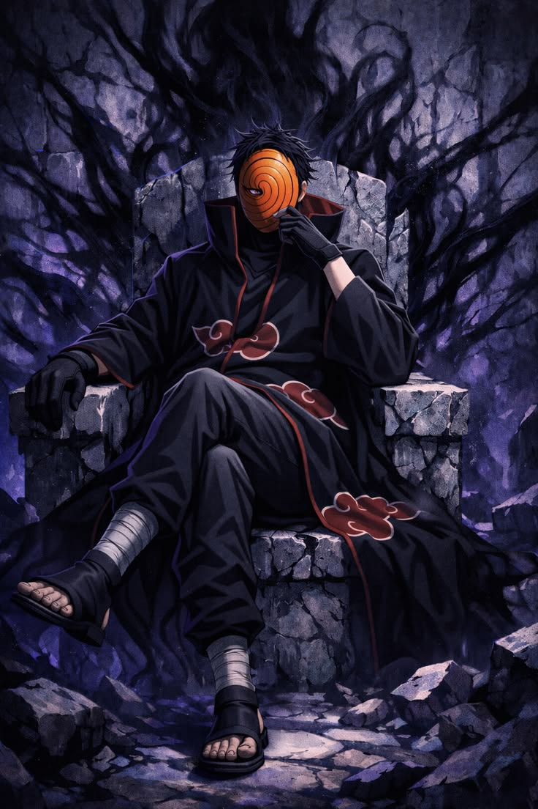

Obito Uchiha is one of the most complex and pivotal characters in Naruto, known for his tragic transformation from a kind-hearted ninja into a major antagonist. Originally a member of Team Minato alongside Kakashi Hatake and Rin Nohara, Obito was believed to have died during a mission, but he was secretly saved and manipulated by Madara Uchiha. Witnessing Rin’s death shattered his ideals, leading him to adopt Madara’s plan of creating a false peaceful world through the Infinite Tsukuyomi.
As an adult, Obito operated under the alias “Tobi” and became a key leader of the Akatsuki, secretly controlling its actions from the shadows. His abilities are extremely powerful, especially his Mangekyō Sharingan technique Kamui, which allows him to become intangible and teleport objects or himself to another dimension. He also possesses immense chakra, Hashirama cell enhancements, and later gains the power of the Ten-Tails, making him one of the strongest characters in the series.
Obito Uchiha from Naruto has a deeply layered personality that changes dramatically over time. As a child, Obito was kind, optimistic, and determined, always striving to protect his friends and dreaming of becoming Hokage. He showed strong compassion, especially toward teammates like Rin Nohara, and often clashed with Kakashi Hatake due to their differing attitudes. However, after witnessing Rin’s death and being manipulated by Madara Uchiha, his personality shifted into one of cold detachment, nihilism, and calculated cruelty. As “Tobi,” he initially acted playful and goofy to hide his true identity, but in reality he became highly intelligent, patient, and ruthless, believing the world was beyond saving. Despite this darkness, a part of his original self remained buried within him, which resurfaces later through his interactions with Naruto Uzumaki, ultimately leading him toward regret and redemption.
Obito Uchiha from Naruto possesses some of the most powerful and unique abilities in the series, making him a near-unstoppable opponent at his peak. His primary power comes from his Mangekyō Sharingan, which grants him Kamui, a space-time ninjutsu that allows him to become intangible by phasing parts of his body into another dimension, as well as teleport himself or others instantly. This makes him extremely difficult to hit in battle.
Beyond his dōjutsu, Obito has enhanced physical abilities due to Hashirama cell implants, giving him high durability, rapid healing, and massive chakra reserves. He can use powerful fire-style jutsu typical of the Uchiha clan and also control the Demonic Statue of the Outer Path. As a wielder of the Rinnegan for a time, he gained access to abilities like controlling the Six Paths of Pain and summoning powerful creatures.

Obito Uchiha from Naruto carried out several major missions that shaped the entire storyline, especially after he adopted the identity of “Tobi” and worked behind the scenes of the Akatsuki. His primary mission was to carry out the Eye of the Moon Plan, originally conceived by Madara Uchiha, which aimed to cast the Infinite Tsukuyomi on the world and trap everyone in a dream-like illusion to end suffering.
To achieve this, Obito secretly manipulated the Akatsuki and led operations to capture all the tailed beasts, including orchestrating attacks and conflicts across nations. One of his most impactful missions was the attack on the Hidden Leaf Village using the Nine-Tails, which caused massive destruction and long-term consequences for characters like Naruto Uzumaki. He also played a key role in the Uchiha clan’s downfall by influencing events from the shadows, indirectly connecting to Itachi Uchiha’s tragic mission.
Obito Uchiha joined the Akatsuki under the influence and guidance of Madara Uchiha after surviving the incident that was believed to have killed him. Once an idealistic and kind ninja, Obito’s worldview was shattered after witnessing the death of Rin Nohara, which pushed him into despair and made him accept Madara’s plan to create a false world of peace through the Infinite Tsukuyomi.
After Madara’s death, Obito took on his identity and began operating from the shadows, eventually infiltrating and controlling the Akatsuki. While the organization was originally founded with noble intentions, Obito gradually transformed it into a group focused on capturing tailed beasts to carry out the Eye of the Moon Plan. He first appeared publicly as the goofy and carefree “Tobi,” hiding his true identity while secretly acting as the mastermind behind the group’s actions. His decision to join and lead the Akatsuki marked his full transition into a major antagonist, driven by pain, loss, and a desire to escape reality itself.